오늘 써도 되는 돈을 알려 주는 가계부
AI 기반 개인 자산·소비·투자 관리 및 금융 습관 코칭 서비스
디지털미디어학과 · 경영인텔리전스학과 2인 팀 | mywave.day

문제 정의
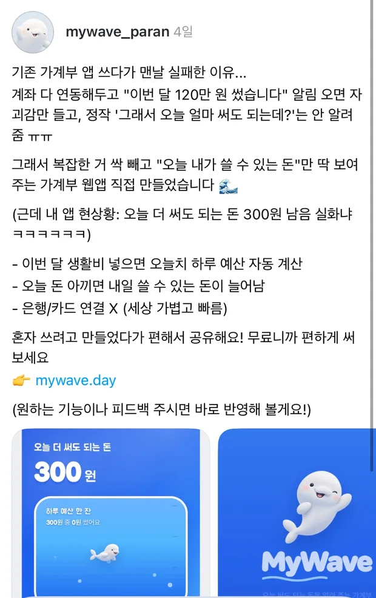
- 기존 앱은 지난 소비의 합계 위주라 오늘 쓸 수 있는 금액을 알기 어려움
- 소비 관리와 투자 기록이 따로 있어 함께 보기 어려움
- 대상: 대학생, 사회초년생
해결 방법: 오늘 더 써도 되는 돈
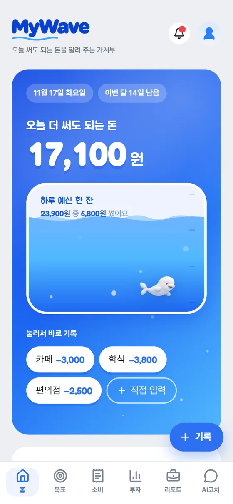
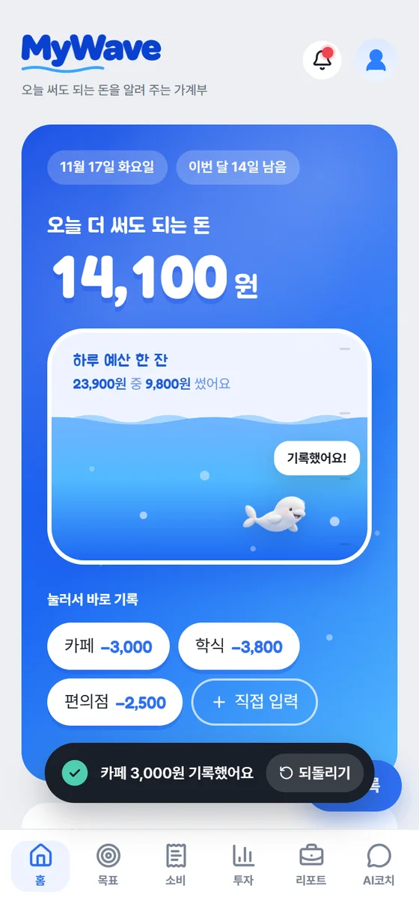
하루 예산 = 남은 생활비 ÷ 남은 날수
- 이번 달 생활비를 입력하면 하루 예산을 자동 계산
- 버튼 한 번으로 소비 기록, 숫자와 잔의 물 높이가 바로 바뀜
- 오늘 덜 쓰면 내일 하루 예산이 늘어남
- 은행·카드 연동 없이 직접 입력 방식
주요 기능
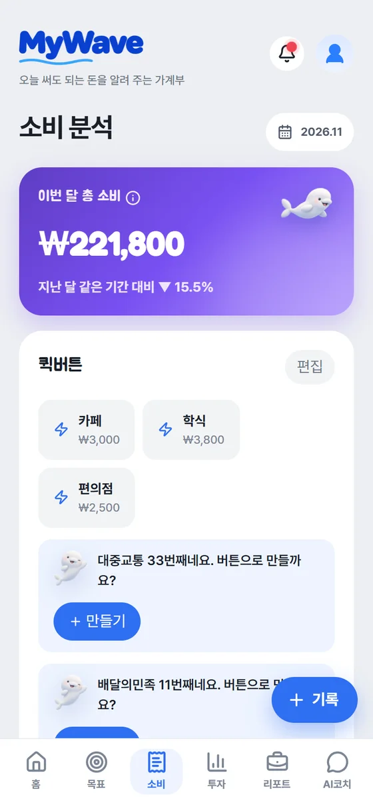
카드 문자, 결제 캡처
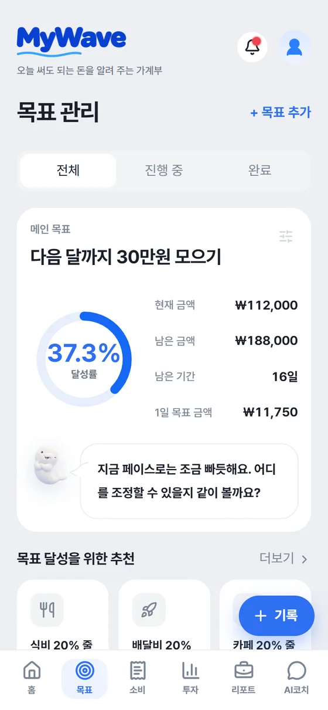
금액 계산
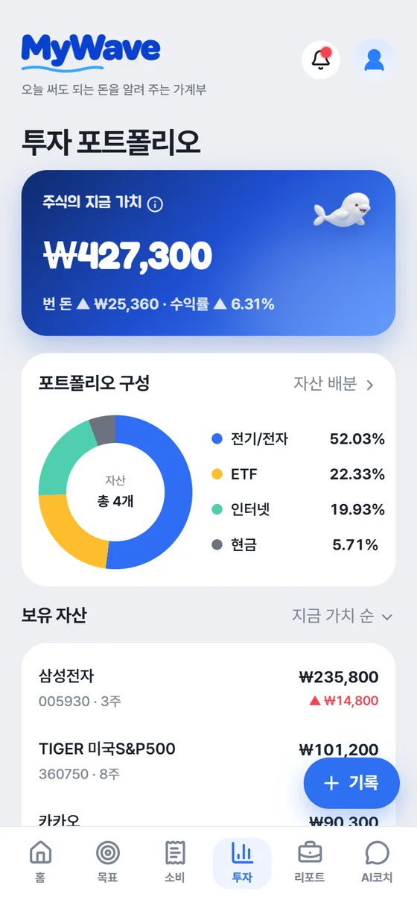
평균단가, 수익률 계산
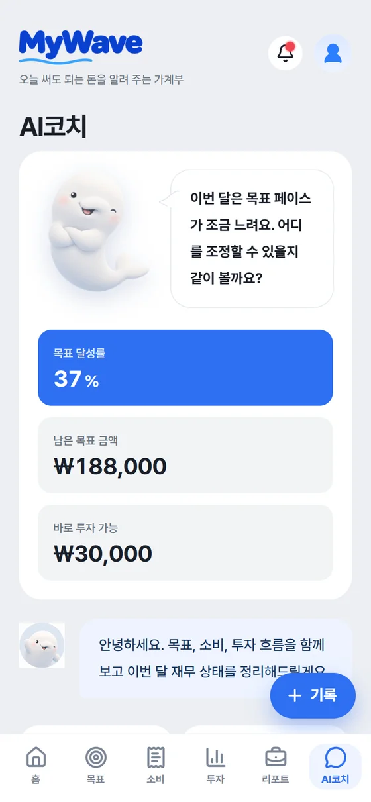
종목 추천은 하지 않음
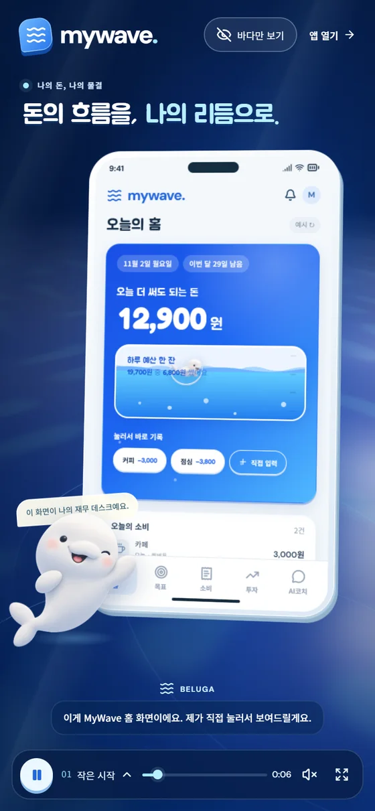
84초 소개 영상
실제 화면 · 데모 계정 데이터화면 19개, PWA 설치 지원, 구글 계정 로그인
동작 구조
용어: 서버 = 계산을 맡는 컴퓨터, DB = 기록 저장소, 토큰 = 로그인 확인용 증표
핵심 구현 3가지
금액을 저장하지 않고
요청마다 계산
이유 저장해 둔 금액은 기록을 지울 때 함께 고쳐야 하는데, 한 곳이라도 빠지면 화면마다 숫자가 달라짐
거래 수정 시
처음부터 다시 계산
AI 답변을
코드로 검사
이유 지시문만으로는 AI가 없는 숫자를 말하거나 매수를 권하는 경우를 막지 못함
개발 규모
화면
사용자가 보는 화면 제작
서버
계산, 로그인, 기록 저장
운영
인터넷 배포, 올리기 전 자동 검사
2026-11-16 기준, 저장소에서 직접 센 값. 개발 기간 2026.05.25 ~ 2026.11.16
계획 대비 수행 결과
배포 및 점검
수정 전 137개 → 수정 후 146개. 남은 6개는 동작에 문제없는 응답 코드 차이
발견해서 수정한 문제
검사 항목 작성과 원인 분석은 AI 코딩 도구 활용, 수정 우선순위와 배포 여부는 팀이 결정
홍보 결과
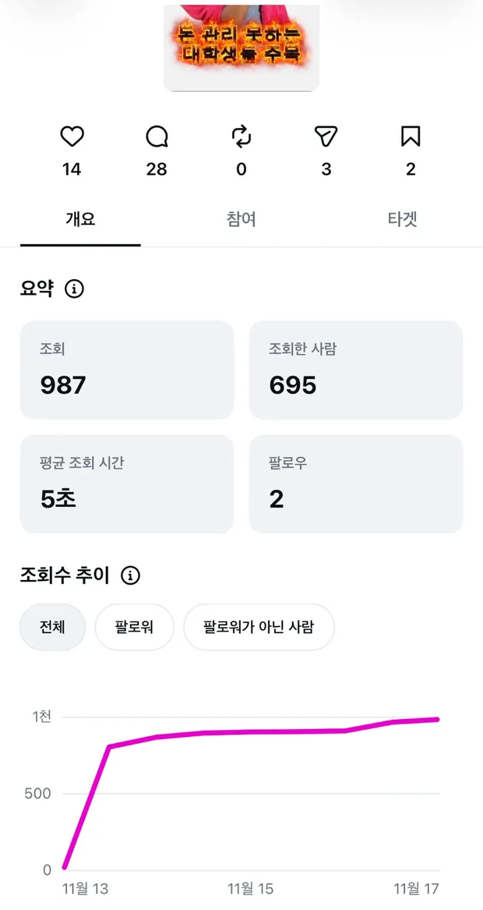
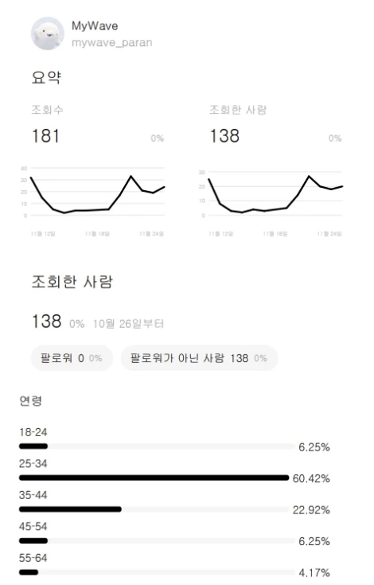
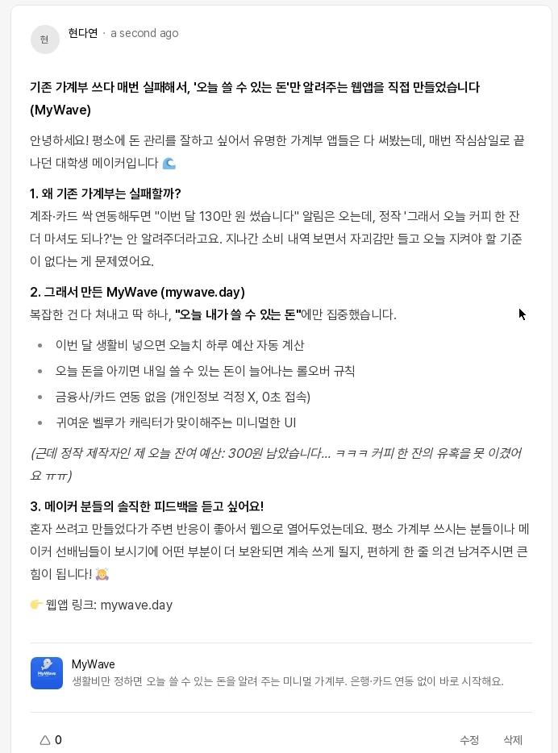
인스타그램 릴스 11/13 게시
스레드 10/26 ~ 11/24
릴스 반응 47 = 댓글 28, 좋아요 14, 공유 3, 저장 2
디스콰이엇(IT 메이커 커뮤니티) 프로덕트 승인 후 소개 글 게시
사용자 피드백과 개선
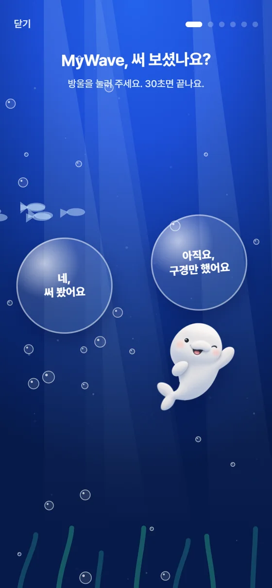
익명 설문
- 11/16 공개, mywave.day/survey
- 사용자: 만족도, 불편한 점
- 미사용자: 시작하지 않은 이유
- 응답자 정보는 저장하지 않음
피드백 반영 내역
가입 전에 서비스 소개를 볼 수 있음
생활비 한 칸만 입력하면 바로 금액이 나옴
말풍선 잘림, 검색칸 글씨, 캡처 안내 문구
기록이 없으면 0으로 표시
배운 점
홍보 영상 평균 조회 시간
조회 수는 나왔지만 끝까지 본 사람이 적었고 링크 클릭이 없었음. 앞부분에서 서비스 화면을 보여 줘야 함
스레드 본 사람 중 25~34세
대학생 나이대(18~24세)는 6%뿐. 대상인 대학생에게 닿는 채널을 다시 골라야 함
AI 도구로 만든 검사 항목
AI에게 작업을 맡길 때는 결과를 다시 확인할 수 있는 검사를 함께 받아야 함. 수정 여부는 사람이 판단
향후 계획
사용자 의견 반영
- 설문 결과 정리, 가장 많이 나온 불편 사항 수정
- 가입 없이 써 볼 수 있는 체험 모드 추가
- 최종 결과 보고서 작성
홍보 2차
- 영상 앞부분에 실제 서비스 화면 배치
- 링크를 댓글 요청 방식에서 바로 누르는 방식으로 변경
- 방문 수, 가입 수 다시 측정
기술 보완
- 체험 계정 데이터 자동 갱신
- DB 변경 관리 도구 도입
- 사용하지 않는 예전 기능 정리
- 사용자 수 확보 후 유료 기능 검증
일정과 항목은 팀 계획에 맞게 수정
감사합니다
mywave.day
질의응답